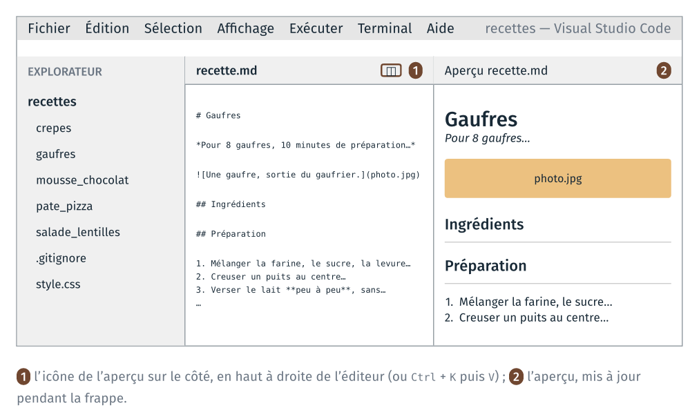
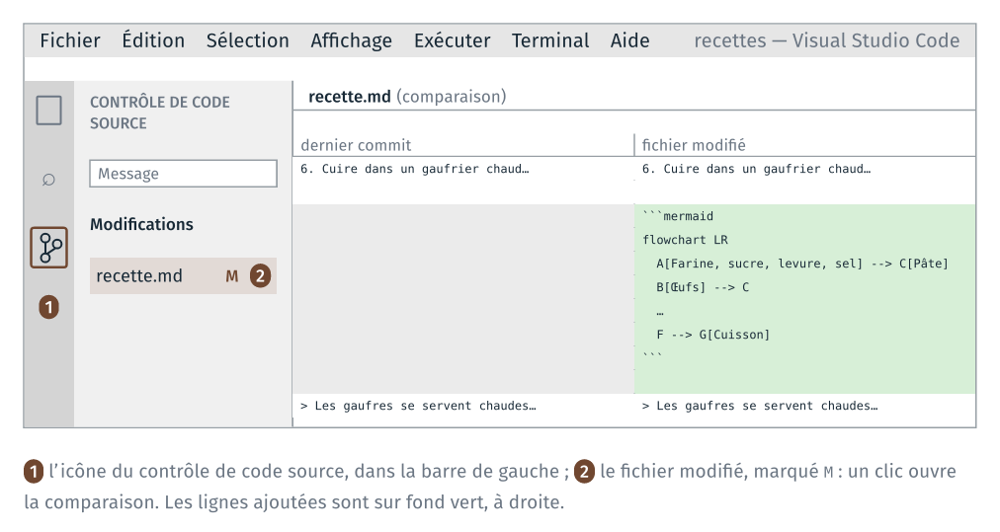

TD 3e — Une recette en Markdown#
Note
Les fichiers des TD de la séance sont dans l’archive info01-cours3.zip.
Ce guide détaille les étapes de la feuille du TD 3e, le TD du parcours standard. Pour chaque étape, il indique le dossier dans lequel se placer, ce qu’il faut écrire ou taper, et comment vérifier le résultat.
Le TD ajoute une recette, les gaufres, à un dépôt git de recettes. Le dépôt
est créé à partir des quatre recettes du TD 3b. Le texte des gaufres est
livré sans structure : il devient un fichier Markdown, recette.md. Le
notebook pages.ipynb, livré dans le dossier des recettes, reprend le
programme du TD 3b : il complète chaque recette par le tableau des
ingrédients et la convertit en page HTML. Un commit enregistre chaque
étape.
Le TD reprend la mise en forme en Markdown du TD 1f. Le code de
ce guide se copie depuis guide_3e_markdown.html, ouvert dans un
navigateur, ou depuis guide.ipynb, ouvert dans JupyterLab. Copié depuis le
PDF, il perd ses indentations.
Étape |
Objectif |
Ce qu’on fait |
Commits à la fin |
|---|---|---|---|
versionner les recettes existantes |
copier le dossier des recettes dans |
1 |
|
vérifier le programme qui produit les pages |
exécuter |
1 |
|
structurer un texte en Markdown |
écrire la recette des gaufres dans un nouveau dossier du dépôt |
1 |
|
produire la page, versionner la recette |
relancer le notebook, committer le dossier |
2 |
|
modifier un fichier suivi, lire le |
ajouter un diagramme de la préparation, relire la modification, committer |
3 |
Étape 0 · Le dépôt des recettes#
À faire : copier
depart/recettes/danstravail/; ouvrirtravail/recettes/dans VS Code, avec un terminal Git Bash ;git init, le nom et l’adresse pour ce dépôt, un fichier.gitignore, puis le premier commit.À obtenir :
git log --onelineaffiche une ligne ; le panneau du contrôle de code source de VS Code n’affiche aucune modification.
Dossier de départ : cours3/3e_markdown/, tel que décompressé depuis
l’archive.
3e_markdown/
├── depart/
│ ├── recettes/ ← le dossier qui deviendra le dépôt
│ │ ├── crepes/
│ │ │ ├── ingredients.csv ← les quantités pour une personne
│ │ │ └── recette.md
│ │ ├── mousse_chocolat/ (même contenu)
│ │ ├── pate_pizza/ (même contenu)
│ │ ├── salade_lentilles/ (même contenu)
│ │ ├── pages.ipynb ← le notebook qui produit les pages
│ │ └── style.css ← la feuille de style des pages
│ ├── gaufres/
│ │ ├── ingredients.csv
│ │ ├── photo.jpg
│ │ └── recette_a_formater.txt ← le texte de la recette, sans structure
│ ├── recette_attendue.md ← le résultat attendu, à ouvrir après avoir essayé
│ └── CREDITS.md
└── travail/ (vide)
0.1 Copier le dossier et l’ouvrir dans VS Code#
Dans l’explorateur de fichiers Windows, copier le dossier depart/recettes/
dans travail/. Dans VS Code : Fichier → Ouvrir le dossier… → choisir
3e_markdown/travail/recettes/, le dossier du futur dépôt. VS Code
affiche l’état git du dossier ouvert, et ses outils git ne fonctionnent que
si le dépôt est ce dossier.
Ouvrir ensuite un terminal Git Bash : menu Terminal → Nouveau terminal ; si
le terminal ouvert n’est pas Git Bash, cliquer sur la flèche à côté du +,
en haut à droite du panneau du terminal, puis choisir « Git Bash ».
Vérification : dans le terminal, pwd affiche un chemin qui se termine
par 3e_markdown/travail/recettes.
0.2 Créer le dépôt#
Dans le terminal Git Bash de VS Code, dans travail/recettes/ :
git init
Régler ensuite votre nom et votre adresse pour ce dépôt. Le poste est
partagé : le réglage se fait dans le dépôt, sans --global, et ne vaut que
pour lui.
git config user.name "Prénom Nom"
git config user.email "prenom.nom@exemple.fr"
Vérification : l’icône du contrôle de code source, dans la barre de gauche de VS Code (raccourci Ctrl+Maj+G), affiche un nombre : les fichiers du dossier, pas encore suivis.
0.3 Le fichier .gitignore#
.gitignore est un fichier texte, placé dans le dossier du dépôt. Chaque
ligne de ce fichier nomme un fichier ou un dossier que git ne suit pas. Son
nom commence par un point et n’a pas d’autre extension.
Le dépôt ne contient que les sources des recettes. Les pages produites par
le notebook, page.md et page.html dans chaque dossier de recette, n’y
entrent pas : le notebook les refait à chaque exécution. Le notebook
lui-même n’y entre pas non plus : son fichier .ipynb contient aussi les
sorties des cellules, qui changent à chaque exécution. .ipynb_checkpoints/
est un dossier de sauvegarde que JupyterLab crée à côté du notebook.
Créer le fichier vide. Dans le terminal :
touch .gitignore
Ouvrir
.gitignoredans VS Code, y écrire quatre lignes, puis enregistrer. Le fichier contient alors exactement :page.md page.html pages.ipynb .ipynb_checkpoints/
Un nom seul, sans dossier, vaut dans tous les sous-dossiers :
page.mdécarte la page de chaque recette.
Vérification :
git status
liste .gitignore, crepes/, mousse_chocolat/, pate_pizza/,
salade_lentilles/ et style.css parmi les fichiers non suivis, mais pas
pages.ipynb.
0.4 Le premier commit#
git add .
git commit -m "Les quatre recettes"
git log --oneline
Vérification : git log --oneline affiche une ligne, avec le message du
commit. Le panneau du contrôle de code source de VS Code n’affiche plus
aucune modification.
Étape 1 · Tester le notebook des pages#
À faire : ouvrir
travail/recettes/pages.ipynbdans JupyterLab et l’exécuter en entier.À obtenir : une page
page.htmldans chaque dossier de recette ;git statusn’affiche aucune modification.
Dans JupyterLab, lancé sur le dossier cours3/ au TD 3a, ouvrir dans le
panneau de gauche 3e_markdown/, puis travail/, puis recettes/, et
double-cliquer sur pages.ipynb. Exécuter toutes les cellules : menu Run,
puis Run All Cells.
Vérification : la dernière cellule affiche une ligne par recette,
crepes/page.html écrit, et ainsi de suite. Ouvrir crepes/page.html par un
double-clic dans l’explorateur de fichiers : la page affiche « Ingrédients
pour 4 personnes en SI » et le tableau des quantités.
Dans le terminal de VS Code :
git status
Vérification : « rien à valider, la copie de travail est propre ». Les
pages et le notebook existent dans le dossier, mais .gitignore les écarte.
Étape 2 · La recette des gaufres en Markdown#
À faire : créer le dossier
gaufres/dans le dépôt, y copier les trois fichiers dedepart/gaufres/, renommer le texte enrecette.md, puis le mettre en forme en Markdown, l’aperçu ouvert à côté.À obtenir : dans l’aperçu, un grand titre, une ligne en italique, la photo, deux sous-titres, une liste numérotée de six étapes et une citation.
2.1 Le dossier de la recette#
Dans l’explorateur de fichiers Windows, copier le dossier depart/gaufres/
dans travail/recettes/. Dans l’explorateur de VS Code, le dossier
gaufres/ apparaît, avec ingredients.csv, photo.jpg et
recette_a_formater.txt. Clic droit sur recette_a_formater.txt, Renommer
(ou F2), et le nommer recette.md.
Chaque recette du dépôt suit la même organisation : un dossier, un fichier
recette.md et un fichier ingredients.csv. Le notebook ne traite que les
dossiers qui la suivent.
2.2 L’aperçu#
Ouvrir gaufres/recette.md dans VS Code.
Ouvrir l’aperçu à côté de l’éditeur : Ctrl + K puis V, ou l’icône en
haut à droite de l’éditeur. L’aperçu se met à jour pendant la frappe.

Raccourci |
Ce qu’il ouvre |
|---|---|
|
l’aperçu à droite ; l’éditeur reste à gauche |
|
l’aperçu seul, dans un onglet |
Sur un ordinateur personnel, d’autres éditeurs affichent aussi le Markdown mis en forme, par exemple Zettlr, logiciel libre, ou Obsidian, gratuit. Sur les postes de la salle, le TD se fait dans VS Code.
2.3 Mettre le texte en forme#
Chaque élément du texte reçoit sa marque Markdown. Regarder l’aperçu après chaque ligne modifiée.
Élément |
Ce qu’on écrit |
Exemple |
|---|---|---|
le titre |
|
|
la ligne sous le titre |
entre deux |
|
les sections |
|
|
les étapes |
|
|
les mots importants |
entre deux |
|
la remarque |
|
|
Deux points propres à cette recette :
La section
## Ingrédientsreste vide. Supprimer les lignes des ingrédients qui la suivent dans le texte brut. Le notebookpages.ipynbécrit à cet endroit le tableau des quantités, qu’il lit dansingredients.csvet adapte au nombre de personnes.La photo s’insère sous la ligne en italique, séparée par des lignes vides :

Entre crochets, une légende qui décrit l’image ; entre parenthèses, le chemin du fichier. Le chemin est relatif : il part du dossier de
recette.md, où estphoto.jpg.
Enregistrer (Ctrl + S).
Vérification : l’aperçu affiche la photo, et les deux sections sont des
sous-titres, soulignés. recette_attendue.md, dans depart/, donne le
résultat : l’ouvrir pour comparer, une fois le fichier écrit.
Étape 3 · La page des gaufres, puis le commit#
À faire : relancer
pages.ipynb; vérifier la page des gaufres ; committer le dossiergaufres/.À obtenir : la page affiche la photo et le tableau des ingrédients ;
git log --onelineaffiche deux lignes.
3.1 La page#
Dans JupyterLab, dans pages.ipynb, exécuter de nouveau toutes les cellules
(Run, puis Run All Cells).
Vérification : la dernière cellule affiche aussi
gaufres/page.html écrit. Ouvrir gaufres/page.html par un double-clic :
la page affiche la photo, le titre « Ingrédients pour 4 personnes en SI » et
le tableau des quantités. Le notebook a traité une recette qu’il n’avait
jamais vue, sans changement de code.
Pour une autre quantité, ajouter une cellule à la fin du notebook, par
exemple generer_page(RACINE / "gaufres", personnes=8, unites="US"), puis
recharger la page dans le navigateur.
3.2 Le commit#
git status
Vérification : gaufres/ est listé parmi les fichiers non suivis.
git add gaufres
git commit -m "La recette des gaufres"
git log --oneline
Vérification : git log --oneline affiche deux lignes. git show --stat liste les trois fichiers du commit : gaufres/ingredients.csv,
gaufres/photo.jpg et gaufres/recette.md.
Étape 4 · Un diagramme Mermaid#
À faire : ajouter à
gaufres/recette.mdun diagramme de la préparation, écrit en Mermaid ; relire la modification ; la committer.À obtenir : le diagramme dessiné dans l’aperçu ;
git log --onelineaffiche trois lignes.
Mermaid décrit un diagramme en texte : chaque ligne relie deux étapes par une
flèche, -->, et le dessin est calculé à l’affichage. Documentation :
mermaid.js.org/syntax/flowchart.html.
4.1 Ajouter le diagramme#
Dans gaufres/recette.md, après la sixième étape de la préparation et avant la
citation, coller le bloc suivant, séparé par une ligne vide avant et après :
```mermaid
flowchart LR
A[Farine, sucre, levure, sel] --> C[Pâte]
B[Œufs] --> C
C --> D[Lait, peu à peu]
D --> E[Beurre fondu]
E --> F[Repos, 30 min]
F --> G[Cuisson]
```
flowchart LR dessine le diagramme de gauche à droite ; chaque étape a une
lettre, et son texte entre crochets. Enregistrer.
Vérification : l’aperçu de VS Code dessine le diagramme. La page produite par pandoc, si on relance le notebook, affiche en revanche le texte du bloc : pandoc ne dessine pas les diagrammes Mermaid.
4.2 Relire la modification#
git diff
Vérification : les lignes du bloc apparaissent en vert, précédées d’un
+. Taper q pour quitter l’affichage.
La même comparaison s’affiche dans VS Code. Cliquer sur l’icône du contrôle
de code source, dans la barre de gauche (raccourci Ctrl+Maj+G) : le panneau
liste sous « Modifications » les fichiers modifiés depuis le dernier commit,
marqués M. Un clic sur recette.md ouvre l’éditeur de comparaison : à
gauche le fichier du dernier commit, à droite le fichier modifié. Les lignes
ajoutées sont sur fond vert.

4.3 Le troisième commit#
git commit -am "Le diagramme de la préparation"
git log --oneline
-a ajoute les fichiers déjà suivis qui ont été modifiés : pas besoin de
git add gaufres/recette.md.
Vérification : git log --oneline affiche trois lignes.
Dossier à la fin du TD :
travail/recettes/
├── .git/ (caché : le dépôt)
├── .gitignore
├── crepes/
│ ├── ingredients.csv
│ ├── page.html (produit, ignoré)
│ ├── page.md (produit, ignoré)
│ └── recette.md
├── gaufres/
│ ├── ingredients.csv
│ ├── page.html (produit, ignoré)
│ ├── page.md (produit, ignoré)
│ ├── photo.jpg
│ └── recette.md
├── mousse_chocolat/ (même organisation)
├── pate_pizza/ (même organisation)
├── salade_lentilles/ (même organisation)
├── pages.ipynb (ignoré)
└── style.css
Ce que le TD fait constater#
Un fichier Markdown est du texte : ses marques se lisent dans l’éditeur, et l’aperçu ou pandoc en font un document mis en forme.
Le programme du TD 3b, repris dans
pages.ipynb, fonctionne sur une recette qu’il n’a jamais vue, pourvu qu’elle suive la même organisation : un dossier,recette.mdavec une section## Ingrédients, etingredients.csv.Un dépôt git ne contient que les sources, ici le texte des recettes et leurs données.
.gitignoreen écarte ce que le notebook produit, et le notebook lui-même.